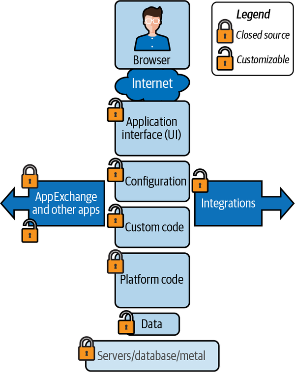
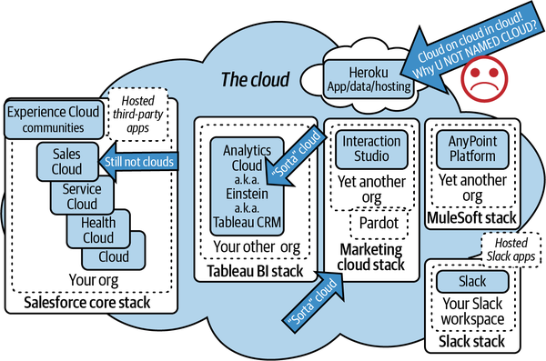
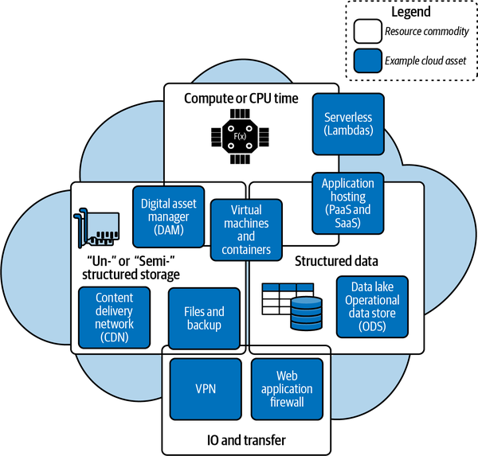

Now that you have a handle on all the basic terminology, we’ll dive a little deeper into the technical components. Salesforce concepts and products are getting unified and renamed all the time, so please be aware that some of the names you see here may be incorrect, depending on when you read this.
We will be focusing on the soft “virtual” tiers of the platform and some of the untouchable real tiers in this chapter. Some of the underlying systems may not be directly accessible or available for use in their classic sense (by end users or administrators). For example, the underlying database system in Salesforce is powered by Oracle, but you can’t write stored procedures for it or use native Structured Query Language (SQL); Oracle is behind the curtain. You’ll need to pay attention to the caveats, but knowing what they are will help you understand the connected functionality.
If you’re familiar with the concept of full stack development, this won’t be new to you. Basically, at any layer of the stack, you can have functions, code, or customization. As Figure 2-1 shows, there are layers that can be customized (unlocked) and others that cannot (locked). The data and many configurations are accessible through a variety of APIs and user interfaces. This is another highly simplified referential diagram; there is a lot of nuance to each of these layers, and we will drill into many of them later in this book.

Each of the Salesforce “stacks” has its own version of the sections from the UI down to the data. The metal-tier resources are distributed as needed, and with the advent of Hyperforce (discussed later in this chapter) Salesforce is moving its workloads to Amazon Web Services (AWS). As with pods, you won’t ever really need to know the details of that. However, you will need to understand these distinctions to identify the locations of different features. Some features only exist at the data layer, some only in platform code, and others could be platform code add-ins. For all intents and purposes, the servers and database servers are fully behind the curtain and inaccessible.
There are multiple Salesforce (the company)-acquired technology stacks that are in play when we talk about “Salesforce” architecture. We will mostly be discussing the components mentioned in the foreword that make up the main vertical of Salesforce functions and hosting. Over time these lines will continue to blur due to changes in product names and new additions to the Salesforce core stack (Figure 2-2). You may not be allowed to see them, and in most cases you won’t need to.

Everything in this figure is owned by the Salesforce corporation and part of the Salesforce ecosystem. They’re effectively different technology stacks, with varying levels of integration with one another (and varying levels of smoothness to those integrations). For most of this book, we will be discussing the Salesforce core stack, and I’ll reference anything that is outside of that box by its name (du jour). For example, Vlocity is a recent acquisition by Salesforce. Effectively, it is functionality that gets added to “your org” in the Salesforce core stack. This is not a comprehensive diagram, but it should at least give you some idea of what goes where and how things fit together.
Figure 2-3 provides a very high-level representation of cloud service capabilities. The base units of file storage, structured data, and compute are present across all cloud (PaaS and SaaS) service providers. The boxes are specific services based on one or (where they overlap) a combination of the core resource types. One of the assumptions of working “in the cloud” is that access/transfer is a given, but there is a cost and you will be paying for it somewhere. Since your consumption might be variable based on time, ad placement, season, events, or other patterns, you will probably be paying based on some averaged measure like “user count,” or by CPU time/load or data transfers. (CPU or compute refers to the processing of data or calculations, as distinct from storing data. Bitcoin mining and data decryption algorithms are some purist examples of highly mathematical workloads that do not require much access to data.) Each cloud provider will be metering resource consumption and charging you for those resources in some way.

Let’s dive into the bigger-picture concepts that will help you understand how the blocks are assembled. Physical is an interesting distinction to make in a SaaS/PaaS ecosystem because for the most part you never get to see the physical systems, just the exposed web or API interfaces. The distinction of a physical boundary means that you cannot use a subcomponent independently without the parent component. We can also abuse the term “physical” to describe distinct boundaries between different functions. For example, AWS and Google Cloud Platform (GCP) might be running on the same servers, but they are completely different company offerings. If they were running on the same servers, it would be very unlikely that you would know it. You can think of this as a physical boundary.
Currently, Salesforce instances are all hosted on Salesforce-owned/proprietary hosting systems. Each group of systems (instance) typically hosts many customers. Some customers are big enough or have enough special requirements that they are the sole customer on an instance. Everyone else shares and lives side-by-side with other customers. Data, compute, and memory are all managed by the application platform. The underlying platform has the ability to see any problems at the instance level and migrate customers to non-impacted systems when needed almost imperceptibly. Additionally, there are platform rules that keep one customer from affecting another that shares the same resources. Tools like Salesforce that are said to be “born in the cloud” are characterized by an elite level of availability, scalability, and security segmentation.
The actual backend database for Salesforce is currently an Oracle implementation. This is informational only, because it is many layers deep in the logical stack beneath what users, admins, and even developers will ever see. It’s actually something of a badge of honor if you manage to create a problem so novel that it generates an error condition that passes through an unhandled error that shows its pedigree all the way to Oracle.
The Salesforce platform has several data access interfaces that are logically similar to those found in classical databases, but it’s important to know that they are layers upon layers. For the most part, you should never have to worry about the actual nature of the “metal” or the database; the interfaces are sufficiently surfaced for all scalable and performance-friendly needs. Interfaces or consumable resources that risk impact to multitenant shared resources either are not surfaced or are very highly governed (governor limits are discussed in the following section).
The base Salesforce server stack and metal (those two terms are blurry due to the buried nature of the physical layers in the PaaS/SaaS offerings) has been proprietary until recently. Salesforce maintains its own server farms with limited geographic redundancy. A visit to the Salesforce Status site can yield an understanding of how the physical resources are currently distributed (hosting, a.k.a. colocation).
Hyperforce is a new infrastructure architecture that allows the conversion/migration of Salesforce hosting to AWS hosting. This gives customers the ability to license Salesforce configured with additional options to meet their higher availability and fault tolerance requirements. This migration also enables redundant server pairs and availability zones. There was once a talk of allowing customers to choose the option of hosting on GCP or Azure as an alternative, but that seems to have evaporated; some organizations have a strong preference for one or the other, but currently there is only one option. While other hosting providers, like Microsoft, still have a physical-centric (or at least adjacent) provisioning model that you can attach a server mentality to, Salesforce and AWS do not. Salesforce’s resource concepts are almost exclusively based on resource consumption and licenses.
Since multitenant resource management is moving from Salesforce’s metal to AWS cloud provisioning, will the governor limits concept change? Presumably, AWS workload management might have more flexibility to allow advanced functionality and relaxation of governor limits. It would likely require a huge fork in the functionality of the Salesforce platform to option governor limits per org, though, so this will at least be significantly further out on the roadmap, if it happens at all. Tight governor limits give Salesforce the ability to predict its usage of AWS resources, and thus its costs. So, this may not be something that is public, but it might be discreetly possible at some point.
This will not be a popular set of diagrams, as most people do not see Salesforce this way. However, this is the lure of Salesforce that is foiled by its name. The Salesforce ecosystem is on par with the other mega-giant cloud powerhouses out there. In the same way that Microsoft is no longer about microcomputer software and Amazon is neither about the rainforest nor selling books, Salesforce is not about sales or even CRM anymore.
There are many undermarketed, big-picture capabilities available in the Salesforce ecosystem that are overshadowed by its name, and the popularity of its namesake functionality. Salesforce overlaps both Microsoft and Amazon (and other big players in the space, like Oracle and IBM) in terms of enterprise functionality. This section cherry-picks a few examples of recent acquisitions and developments that demonstrate this, for the purposes of illustration. This isn’t an exhaustive list; the point is to be aware of the complete range of in-platform or platform-adjacent capabilities so that you know when it’s cheaper or more efficient to enable versus integrate. For example, you may already own a business intelligence (BI) system, but shuttling Salesforce data to it may be more costly than using Salesforce’s built-in BI/reporting capabilities.
Trying to establish component definitions in the era of modern cloud services is an exercise in futility. The following definitions will try to draw the Platonic ideal of a concept like a “knife” or a “screwdriver,” but today almost every offering is a Swiss Army knife chimera. Some products, like Kafka, are now almost synonymous with their functions, like Kleenex. Please be wary of terms that have potential contextual changes.
Heroku is a PaaS offering that allows hosting and dynamic allocation with pricing based on a pay-as-you-go consumption model. It’s popular for mobile app hosting, data crunching, large data storage, and more. Heroku is a relatively recent acquisition. With it, Salesforce now has its own cloud (using the classic definition).
Heroku is a licensing and management skin-frastructure built on top of AWS, so to say it competes with the AWS cloud is imprecise. It does bring many AWS/Azure-esque abilities under the Salesforce umbrella, but few of these abilities offer much in the way of benefit to Salesforce over other third-party offerings.
MuleSoft is another recent acquisition that signaled titan-level maturity. Most people think of Salesforce as a silo platform that occasionally connects to other systems, but the inclusion of MuleSoft showed just how important integrations and data centralization have become in the ecosystem.
MuleSoft might be more accurately called an “API orchestration as a service” offering, due to some missing or nascent features that are common in other IPaaS solutions that you might be more familiar with.
Tableau was already established as a major player in the BI and reporting space when Salesforce acquired it. It maintains popularity among data scientists and reporting experts, as well as creating a maturity path from in-application reporting tools into a world-class BI framework.
In addition, Salesforce is one of the many platforms that has invested heavily in Snowflake’s offerings (Snowflake is a cloud-based data warehouse service that contains a combination of data storage and data sharing tools; it’s becoming a very common choice for providing data to reporting systems like Tableau). Salesforce-specific integration features regularly drop from Snowflake, showing that while it is not a Salesforce property, it is very clearly central in Salesforce’s data actualization pathway.
Quip is a web-based document management system. Another fairly recent acquisition, it adds document creation, collaboration, management, storage, and integration capabilities to the core Salesforce platform. Quip is quietly a functional competitor to Microsoft Office Online, SharePoint, and OneDrive, as well as offering identical functions to Google Docs and Google Drive.
In 2021 Salesforce acquired Slack, a chat-centric collaboration system that gained fame with its integrations to major development systems like Git and Jira. Slack has exploded in popularity over the past few years, thanks to its support for inline and streamlined developer communications. Its key features have been imitated by many of the prior leaders in the space. Zoom and Microsoft Teams are now in constant feature competition, though Teams has the lion’s share of users (this current market advantage is likely due to its bundling with Windows and Office licensing).
Visual Flows, MuleSoft, and OmniScripts all have flavors of low-code, visual design, robotic process automation (RPA), and business process management (BPM) tools. Citizen developers can quickly get up to speed with these always-growing development systems, but they aren’t perfect and can lead to confusion with so many options as in-platform peers. Nevertheless, they do seem to be the way of the future, as the popularity of low-code tools continues to grow.
The Salesforce core platform supports a variety of automation and customization frameworks that range from proprietary to industry standard. Apex, the primary language in Salesforce, is very similar to Java in syntax. It seems to be a very mature and extensible specification, but it’s only one of the languages in use in different capacities in the Salesforce ecosystem. This means that there are limits to how much you can do with it, and how often you can do it. Generally these don’t pose a problem for small companies, and large companies have alternatives galore. Medium-sized companies, however, may face challenges due to growing pains and lack of affordable self-sponsored options. There are many consumption-based, third-party providers they can farm work out to, but this can quickly lead to complexity in systems and licensing, and a growth plan is essential.
Salesforce Functions is a new, independently licensed Lambda compute functionality that lets in-platform Apex code that is governed by multitenant rules and governor limits call out to an AWS-based compute stack. It removes the barrier of compute limitations, allowing you to perform large I/O and compute operations externally and return results or data to the platform. You are also not limited to writing code in Apex, as Salesforce Functions allows running of Java, TypeScript, and JavaScript. This opens up a new world of open source projects written in those languages that can be easily harnessed to quickly launch complicated functions (no need to reinvent the wheel in Apex). Salesforce Functions hasn’t seen much public adoption, however, and it has a questionable path forward. Fortunately, there are ways to accomplish the same things in Heroku or with traditional AWS Lambdas.
Salesforce is an application built to be a platform for others to build applications on. As such, it offers a variety of platforms, components, features, and applications for enterprise use. Whereas you used to have to buy, install, set up, and provide power for all of these yourself (or pay someone else to), now there is a web interface that abstracts these originally physical jobs into a few clicks, with the same results.
Table 2-1 gives some examples, in a few hypothetical contexts; the following subsections dig into the terminology.
| University enrollment | Water plant maintenance | Lemonade stand | |
|---|---|---|---|
| Platform | Salesforce | Salesforce, MuleSoft | Salesforce, Marketing Cloud |
| Components | Apex, Flows | Apex, Lightning Web Components | Apex, Interaction Studio |
| Features | Sales Cloud, Service Cloud, Experience Cloud | Field Service Lightning, Service Cloud, custom indexes | Sales Cloud, CDC Plus, high-volume platform events |
| Applications | University of Internet Student Blazer Portal | EGPower Inspector | Nextgen Drink Sales and Marketing |
A platform is a surface or framework for building functionality. There can be platforms at many tiers or conceptual layers of the internet, but for most of our purposes we will be focused on PaaS frameworks for delivering web functionality. Salesforce the company owns several platform service providers. Salesforce the platform is a platform (duh). Many of the components within the Salesforce platform could also be considered platforms. Think of this as the foundation of a house. A second-story foundation could be built on top of the first foundation. Both are fairly clean slates upon which to assemble things. This is an engineering concept.
A component is something built or reusable within any platform. Components are one of the many things that are created by engineers for reuse by themselves or other engineers. Components are the wood, nails, and concrete of a building. They are used to assemble and build features and applications. Components are generally available to all engineers on the platform as designed by the engineers that built them.
The term component is also used in a slightly different context within Salesforce development, to refer to “packages” of code. (In Chapter 8, please see the discussions of Aura and Lightning Web Components.)
Feature is another term with a lot of loose usage and overlap. For the purposes of this book, a feature is one or more components or pieces of functionality that is either enabled or not. Features can be turned on or off for use by end engineers. Features can provide end user functionality or engineering capabilities.
In this context, the term application refers to any grouping of functionality delivered to an end user. It is an assembly of components and features of a platform, possibly in conjunction with other platforms (integrations), to deliver a business process capability. An application is where the engineering components (and features) unite with the concepts of permissions, users, and business or application processes. Everything you build on Salesforce or connect to Salesforce could meet the definition of a single application, or you could surface many groupings of functionality and call them all applications. The meaning of the term is very arbitrary in general conversation. The Employee Portal application could just provide links to other applications on other platforms, but the end user might only be aware of the Portal as the application they use. All the participant systems/applications might also be managed collectively by the same group of people and referred to collectively as “the Portal.”
The spectrum of definitions for an application can be as broad as “any perceived unification of functionality under any single perspective.” (AWS is one application because you manage it from a single website.) It could also be as narrow as “a few lines of code.” (I wrote an application in Excel to help me update cells.) See Table 2-1 for some example standard usages of the macro concept of applications.
If a platform, feature, or component provides no utility to a business user, then it is not an application (again, only for most of the purposes of this book).
Salesforce has more than a few specific uses for the term application. Multiple applications (tabs) could be part of an application in this definition.
Why this definition? As an enterprise architect, most of my application value mapping examinations have been trying to measure the value and cost of running systems. Value is most easily mapped to the benefit derived from a unit of a system that provides a distinct business function. Comparative value mapping requires having some concept that can translate from system to system and platform to platform. There are many application lifecycle management (ALM) tools that you can use to map various costs and concepts, but that requires investment and discipline. The cheap and cheerful route that many companies opt for is to do this “by department.” In the modern cloud era, however, this approach is very limiting and leads to IT silos. Transitioning to functional granularity requires a lot of blended organizational cooperation. Highly cooperative and transparent organizational practices yield the most accelerated and innovative businesses. Trying to achieve this goal means being able to address everything in units of value. Then you must leave as few nebulous shared-resource monoliths as possible in place. Working on a shared platform can make that really hard, but the effort can make all the difference in a capability-driven organization. The alternative is that the department that has the biggest budget makes all the decisions, regardless of the fit or total value proposition. These are extremes; choose your position on the spectrum wisely.
For awareness, this section presents a list of business functions that have a decent amount of maturity as product lines within Salesforce. This is not intended to be comprehensive. Using the definition of “application” from the previous section, there are quite a few features of the native platform that are almost usable out of the box by end users and could be standalone functions. Most of the functions require data and configuration to have functional value to an end user. Suppose, for example, that you are enabling a Sales organization with Sales Cloud on the Salesforce platform. Users cannot use it until someone has:
Created user identities for accessing the tool
Created a permission structure for who can see what
Set up the number of steps in your sales process
Added or loaded your existing customer base
Trained users on how to appropriately load customers and contacts
Explored the processes that are supposed to happen when users do things in the system (there are only a few actions that happen automatically without being configured to do so by default)
Defined the way users and data will be stored in the primary data structures
Since the Sales Cloud feature needs to be configured and populated with business functional rules and operational data, it is not able to deliver business functionality.
The discussion of products will be limited due to the fact that most of the product branding and licensing line items have little bearing on infrastructure or architectural concepts. Some of the architecture features are licensed; some are seamless. There are products for:
Customer relationship management
Industry-specific functions like:
Health
Commerce
Banking
Sales
Ordering
Billing
Marketing
Collaboration
Office utilities
A lot of these product offerings are either features or mini-platforms, without a good rule for determining which is which. This book won’t say much about the business process capability offerings inside of Salesforce’s functional offerings, unless they cross an important technical boundary. You can easily find documentation on the things you can buy on the Salesforce website; we will continue to focus on what you need to know to manage, secure, connect, and implement Salesforce core functional offerings with other clouds or platforms.
You can find a list of products and pricing information on the Salesforce Product Pricing page.
While more traditional cloud offerings from other vendors have more direct “X license equates to your usage of Y physical resource” relationships, in Salesforce the lines can seem blurry. With Microsoft you’re mostly paying for systems like SQL Server, Exchange Server, or desktop applications such as Excel; with AWS you’re paying for compute or storage. Salesforce is more licensed by functionality. You’re paying for features. Some of those features have distinct containers, but focus on the functional. Some products are loosely coupled to stacks using other stacks, and some features will just be licensing to change a soft limit of the number of widget operations you can do in a 24-hour period (like rollover minutes). Products may be called “applications” or “features” but include changes to the metal and touch everything in between.
Although it can seem like you are trying to understand an Escher-esque licensing model, the goal is to make the consumption model as granular as possible so that customers only pay for what they need. Bundles are available too. I will be calling out some boundaries that only have a relationship to licensing (e.g., governor limits), but won’t spend much time on them since they are mostly code-level and performance management minutiae. Please refer back to these first two chapters for term reference and boundary definitions often as you progress.